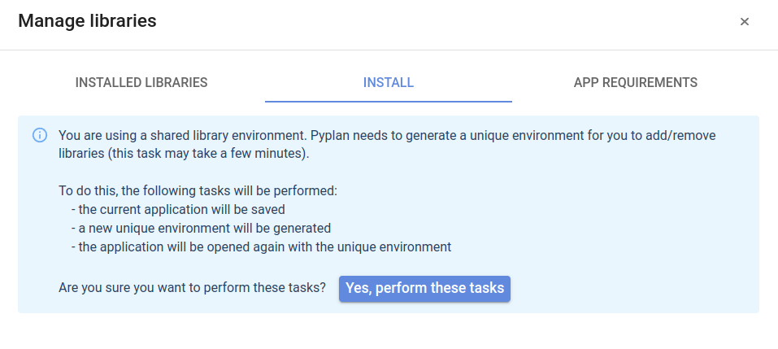
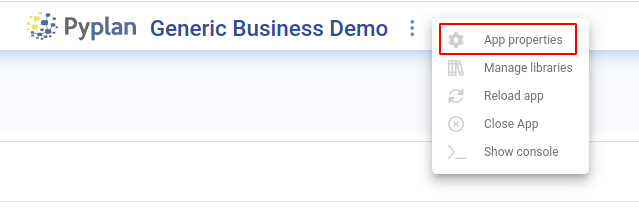
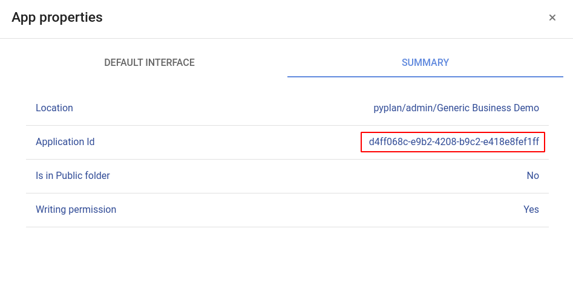

Entornos virtuales
Contents
Entornos virtuales#
Los entornos virtuales son repositorios donde se instalan las librerías de python que utiliza una aplicación. Pyplan gestiona estos entornos virtuales de manera automática, recargándolos al momento de abrir una aplicación.
En Pyplan v3.3.1 o superior, los entornos virtuales son individuales por aplicación. Esto permite que cada aplicación tenga su propio set de librerías.
Funcionamiento#
Los repositorios de entornos virtuales se almacenan en la carpeta .environments, ya sea en el espacio público como en el espacio de trabajo del usuario.
Diferentes escenarios:
Se abre una aplicación desde el espacio público y el entorno para dicha aplicación todavía no existe: en este caso se creará el entorno en el momento de abrir la aplicación. Como esta tarea puede tardar unos minutos, se puede ver/ocultar el avance de la creación del entorno haciendo click en la opción Show installation log/Hide installation log.
Se abre una aplicación desde el espacio público y el entorno para dicha aplicación ya existe: se monta el entorno virtual correspondiente, se compara el repositorio de librerías con las librerías especificadas en el archivo requirements.txt, si es necesario se instalan nuevas librerías.
Se abre una aplicación desde el espacio de trabajo del usuario: si el entorno correspondiente a la aplicación existe en el espacio de trabajo del usuario, se monta dicho entorno. Si no existe, se intenta montar el entorno correspondiente de la aplicación desde el espacio público. En caso de que éste tampoco exista, se crea el entorno en el espacio de trabajo del usuario.
En el caso 3 antes mencionado, (si la aplicación se abre desde el espacio de trabajo del usuario y se monta el entorno desde el espacio público), si el usuario necesita realizar cambios en las librerías se mostrará el siguiente mensaje:
Esto indica que para realizar cambios (ya sea instalando una librería utilizando la herramienta «pip install» o modificando el archivo requirements.txt) se deberá crear el entorno virtual en el espacio del usuario. Ésta tarea es automática y se inicia haciendo click en el botón: Yes, perform these tasks. Esto tomará un tiempo y luego el usuario podrá instalar las librerías que sean necesarias.
Truco
Realize esta acción sólo en el caso de que necesite agregar/modificar librerías.
Instalar librerías#
Se puede instalar librerías de dos formas:
utilizando la pestaña «Install» y escribir el nombre de la librería a instalar
desde la pestaña «App requirements» puede modificar de manera manual el archivo requirements.txt. Esta última opción brinda mas control sobre las librerías que necesita la aplicación.

En definitiva, el set de librerías que una aplicación necesita se define en el archivo de requerimientos (requirements.txt). Este archivo se genera automáticamente si el usuario quita una librería desde la pestaña «Installed libraries» o agrega una nueva librería utilizando la pestaña «Install»
Identificador de aplicación#
Cada aplicación de Pyplan posee un identificador único que se puede visualizar ingresando a la opción de propiedades de la aplicación.
 Este identificador se genera al crear una nueva aplicación y es utilizado para identificar el entorno virtual asociado a la aplicación. Por lo tanto es importante asegurarse de que todas las versiones de la misma aplicación tengan el mismo identificador, como así también que todas las aplicaciones distintas tengan su propio identificador.
Truco
Si desea crear una aplicación nueva partiendo de otra, utilice la función «crear desde». De esta manera se asegura de que se genere un nuevo identificador único para la aplicación que se está por crear.
Utilizando entornos por primera vez#
Si está por abrir una aplicación que se creó con una versión anterior a Pyplan 3.3.1, en el proceso de apertura se creará el entorno virtual de dicha aplicación. Este proceso puede llevar bastante tiempo, dependiendo de las librerías usadas por la aplicación.